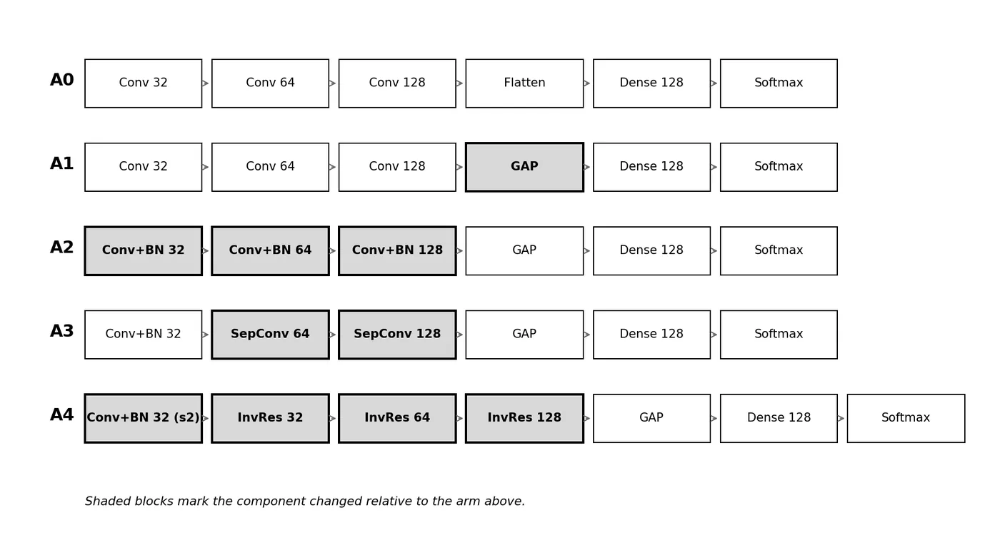
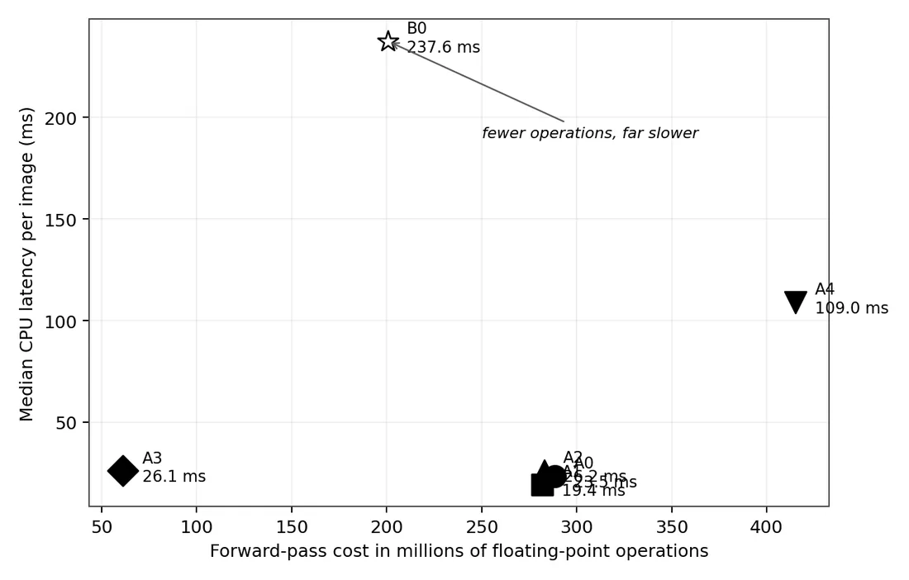

Which MobileNetV2 ideas actually help a small CNN?
An ablation study on plant leaf disease classification across 38 classes. A simple custom CNN was changed one architectural idea at a time, and each change was measured for accuracy and for cost: parameters, model size and CPU latency.
- My part
- Study design, data splits, training, benchmarks, analysis
- Data
- New Plant Diseases Dataset: 87,220 images, 14 crops, 38 classes
- Stack
- Python, TensorFlow, Keras, scikit-learn, Streamlit
- Links
- Source · Slides (PDF)
01The data leaked
The public dataset ships with train/ and valid/ folders, but it contains rotated and flipped copies of the same photographs. Each filename encodes its source photograph, so I grouped the files by that ID.
The 87,220 files come from only 47,032 distinct photographs, and the shipped folders share 8,599 of them: 62.7% of valid/ are copies of training images. Any score measured on that split is inflated.
scripts/make_splits.py builds new splits grouped by source photograph, so no photograph appears in more than one split. Validation and test keep only original, non-augmented photographs.
| Split | Files | Source photographs |
|---|---|---|
| Train | 22,800 | 16,744 |
| Validation | 4,574 | 4,574 |
| Test | 9,166 | 9,166 |
At the photograph level the classes range from 152 to 2,527 images, a 16.6 times imbalance, so macro-averaged F1 is the main metric rather than accuracy. The scores here are lower than commonly reported ones for this dataset, but they are measured on photographs the model has not seen.
02The ladder
Each arm adds exactly one change to the arm before it, so the difference between neighbours measures that change. A pretrained MobileNetV2 with a frozen base, B0, is trained under the same protocol as a reference.

| Arm | Change | Parameters | Size MB | CPU ms | Macro F1 |
|---|---|---|---|---|---|
| A0 | Custom CNN baseline | 3,309,542 | 37.92 | 23.5 | 0.911 |
| A1 | + global average pooling | 114,662 | 1.36 | 19.4 | 0.830 |
| A2 | + batch normalization | 115,334 | 1.39 | 26.2 | 0.866 |
| A3 | + depthwise separable convolutions | 34,278 | 0.47 | 26.1 | 0.838 |
| A4 | + inverted residual blocks | 289,798 | 3.52 | 109.0 | 0.974 |
| B0 | Pretrained MobileNetV2, frozen | 2,426,854 | 10.90 | 237.6 | 0.929 |
Every arm differs significantly from the A0 baseline (McNemar's exact test, p < 0.001).
03Findings
- The ideas are not additive.
Global average pooling and depthwise separable convolutions each lowered accuracy on their own. Almost all of the gain came from the inverted residual blocks in A4.
- A small model beat the pretrained reference.
A4 reached 0.974 macro F1 and 97.9% accuracy on 9,166 held-out images, above the frozen MobileNetV2 at 0.929, with 8.4 times fewer parameters, 3.1 times less storage and 2.2 times faster CPU inference.
- FLOPs did not predict speed.
MobileNetV2 needs fewer operations than the A0 baseline but is about ten times slower per image on a CPU. Latency has to be measured on the hardware the model will run on.

04Protocol
- Input 128 × 128, batch size 64, Adam at a learning rate of 0.001, categorical cross-entropy.
- A fixed budget of 40 epochs with no early stopping; the weights from the best validation epoch are used.
- The test split is evaluated exactly once per arm, after the weights are chosen.
- Seed 42 for Python, NumPy and TensorFlow. Trained on a Tesla T4 GPU on Kaggle; latency is the median of 100 CPU runs after warm-up.
05Limits
- The MobileNetV2 reference was a frozen feature extractor, with only 7% of its parameters trainable. A fully fine-tuned MobileNetV2 would be a stronger comparison.
- Each arm was trained with one seed, so run-to-run variation was not measured.
- A4 was still improving at the end of the 40-epoch budget, so its score is a lower bound.
- The images are single leaves on plain backgrounds, and the results may not carry over to field photographs.